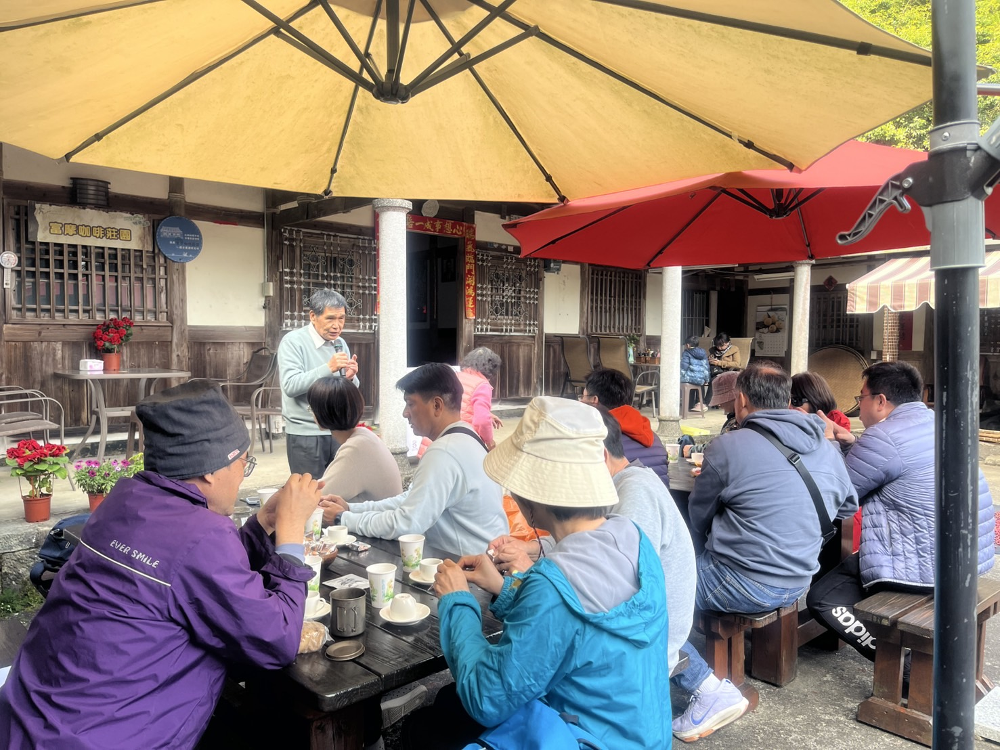
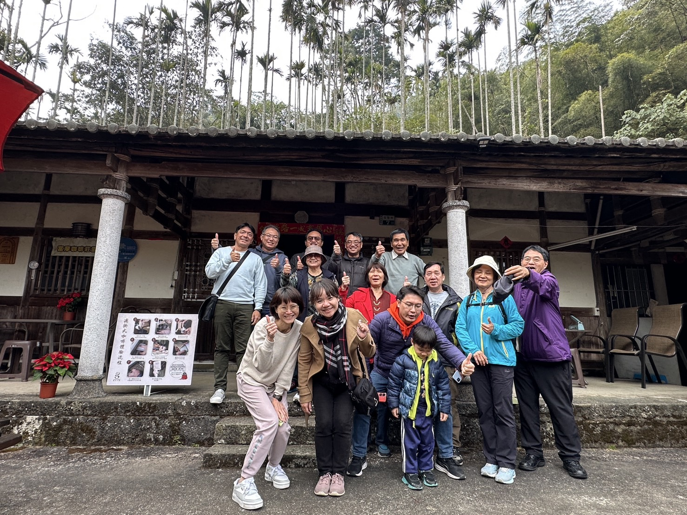
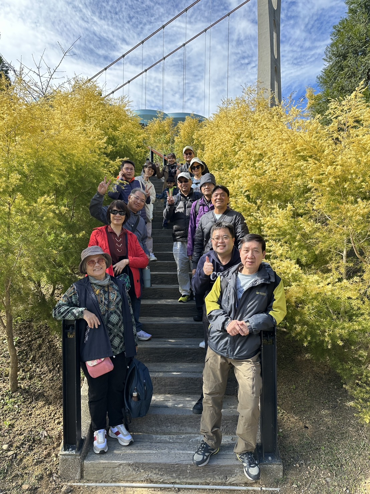
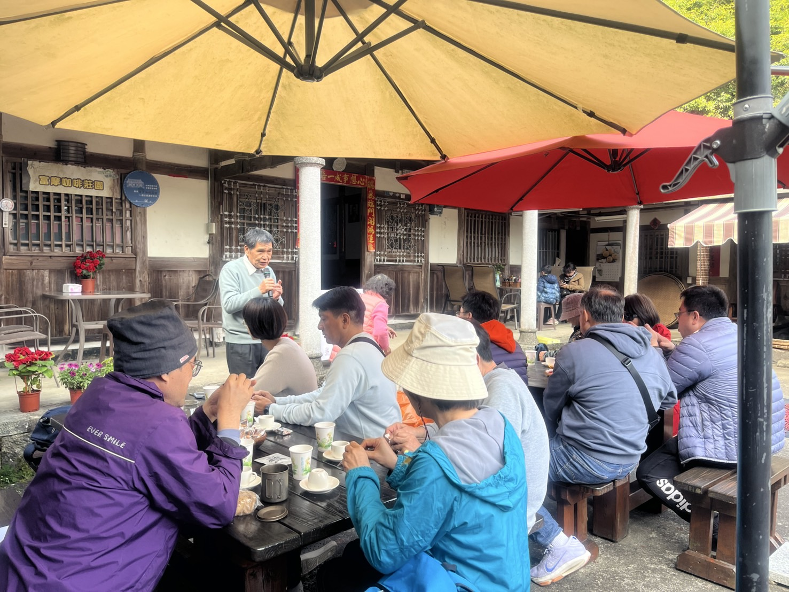
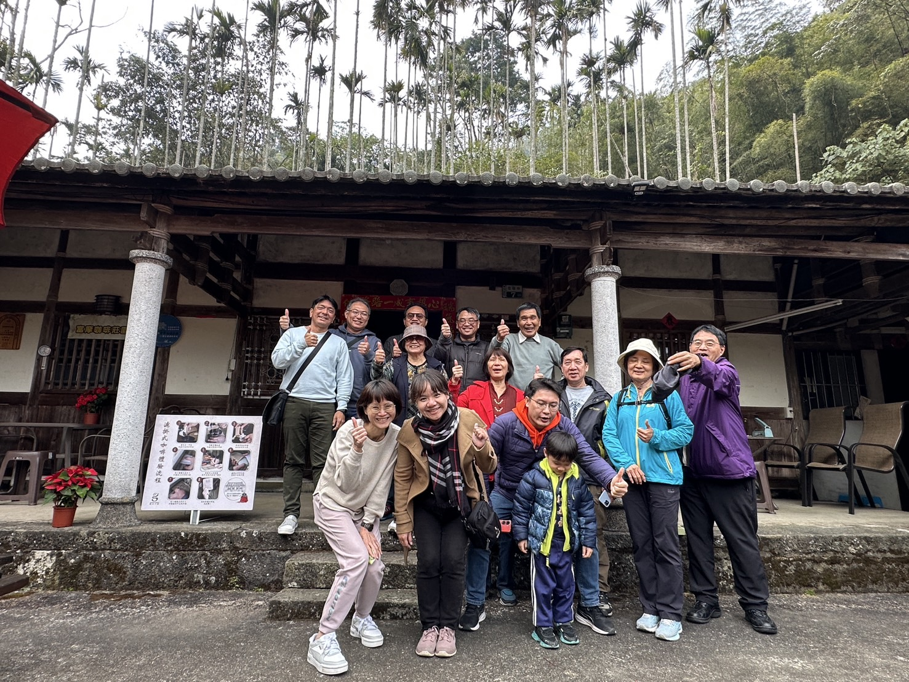
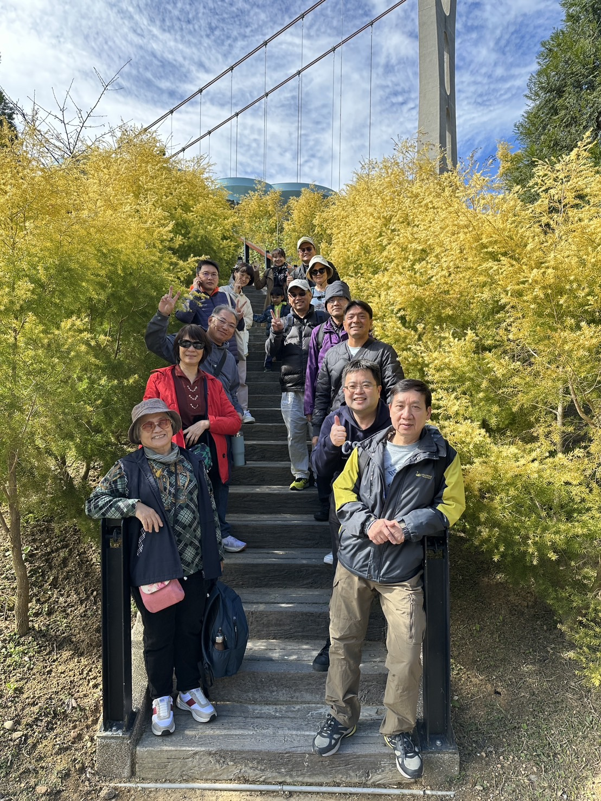

🏃♂️ 中山醫大教師會出遊活動 🌿
健康促進 • 聯誼交流 • 美好回憶
🚴 二水自行車道一日遊
活動名稱: 二水自行車道一日遊
活動主題: 健康樂活
活動日期: 115年1月13日(星期二)
⏰ 報名截止日: 115年1月7日
🗓 行程安排
09:03~10:00 大慶火車站搭區間車
10:00~10:30 集合、繳費、團體照(火車陳列場)
10:30 二水自行車行集合
📍 地址: 彰化縣二水鄉光化村光文路六號
📞 電話: 04-879 0207
10:30~16:30 單車自由行
16:30 歸還自行車、解散
🎯 推薦景點與美食
🍴 站前美食
水煎包、麵線、烤玉米、燒餅、雞肉飯等
🏞 必遊景點
- 源泉車站
- 八堡圳
- 林先生廟
- 二水老街
- 謝東閔故居
- 董家三代肉圓
- 在地冰店、炒麵等特色小吃
💰 活動費用與補助
✨ 教師會會員每人補助200元
會員: 保險費50元 + 自行車100元 + 早餐50元 - 補助200元 = 0元/人
眷屬: 保險費50元 + 自行車100元 + 早餐50元 = 200元/人
⚠️ 注意事項:
• 搭區間車請攜帶悠遊卡或自行購票
• 自行車租借需攜帶證件
📝 報名資訊
- 報名截止日: 115年1月7日
- 主辦單位: 中山醫大教師會健康促進推動小組
- 協辦人: 楊乃成、胡超群、沈祐成、陳健懿
- 聯絡人: 營養學系 楊乃成老師 📞 0936-810214
- 報名方式: 教師會Line群組聯絡
- 備註: 可攜眷參加
🚴♂️ 歡迎一起騎乘暢遊二水,享受健康樂活好時光! 🌿
📸 嘉義太平老街一日遊
114年1月14日(二),教師會舉辦了以健康樂活為主題的「嘉義太平老街一日遊」。在這次活動中,教師們享受了自然景觀與文化體驗,留下了滿滿的回憶!
🗓 行程安排
09:00 中山醫後門出發,前往太平雲梯停車場
10:30 太平雲梯遊客服務中心集合,購票後遊覽雲之南步道
12:00 自行用餐於太平老街
14:00 富摩咖啡莊園,咖啡DIY體驗
16:00 活動結束,返回出發地
✨ 活動亮點
 





💭 活動回顧
這次嘉義太平老街一日遊,不僅讓教師們紓解壓力,也增進了同事之間的情誼。從壯觀的太平雲梯到充滿人文氣息的老街,再到香氣四溢的咖啡莊園,每個景點都讓大家收穫滿滿。期待未來能舉辦更多這樣的活動,讓大家有更多機會交流與放鬆!
🚂 竹南-崎頂一日遊
活動主題: 健康樂活 • 美食 • 健走 • 聯誼
活動日期: 114年7月2日(星期三)
🗓 行程安排
08:20~09:53 大慶火車站搭區間車
10:00~11:30 竹南火車站美食自由行
11:45~11:58 搭區間車前往崎頂火車站
12:00 集合、團體照、繳費
12:00~13:30 子母隧道 & 景觀台
14:00~16:00 啤酒廠導覽
16:00 返回竹南火車站解散
意猶未盡: 16:00~18:00 綠光自行車道
💰 活動費用與補助
會員: 保險50元 + 啤酒廠導覽100元 - 補助100元 ➝ 50元/人
眷屬: 保險費50元 + 啤酒廠導覽100元 ➝ 150元/人
⚠️ 搭區間車請攜帶悠遊卡或自行購票
🚴 意猶未盡行程請自行借車(建議提前於崎頂火車站附近東勳輕旅單車環島電輔車租賃借車)
📝 報名資訊
- 報名截止日: 6月20日(四)
- 聯絡人: 營養學系 楊乃成老師 📞 0936-810214
- 報名方式: 教師會Line群組 或 線上報名
🚆 一起出發迎向夏日輕旅行吧!
📸 活動精彩回顧
🎉 走進崎頂隧道、品啤酒香 - 一日輕旅行療癒登場!
114年7月2日,教師會舉辦年度出遊活動,在盛夏陽光下展開一場療癒又充電的一日小旅行。老師們暫時放下研究和計劃,踏上從台中大慶站出發的鐵道之旅,與志同道合的夥伴共度一段悠閒時光。
🍜 美食自由行 × 海線懷舊風
竹南火車站下車後,老師們展開自由尋味之旅,特色冰品與在地小吃成為人氣首選。
🌿 子母隧道探幽,品嘗好吃野果
午後來到崎頂子母隧道與觀景台,漫步於充滿歷史氛圍的磚造隧道與海景步道,讓人身心舒暢。路途中植物專才賴全裕老師隨手拈來就是一顆野果,再走一下又是一顆蓮霧的介紹,讓大家大快朵頤。
🍻 台啤導覽時光 感謝師友情誼促成
在台灣啤酒竹南觀光工廠,我們感受到最深刻的「人情味」。特別感謝楊乃成老師籌畫舉辦,以及賴坤明老師牽線聯繫,讓此次參訪成行。更承蒙楊繼忠廠長親自安排,由本校生醫系86級校友、現任品管課技佐陳冠州先生擔任導覽與接待,專業又親切,讓大家收穫豐富、喝得開懷!
🛤 站前合影 留住團圓時光
活動尾聲回到崎頂車站前,大家留下合影,紀錄這段充滿笑聲與友誼的一日旅行。回程車站巧遇剛要下班的台灣啤酒竹南觀光工廠楊廠長,驚喜現身合影,增添旅途溫度。
🎉 教師專屬的療癒假期
這不只是一場旅程,更是一場屬於老師們的療癒時光——走出教室、走進風景,在山海之間重新連結彼此,也為教學生活注入嶄新能量。期待下次的美好旅程!